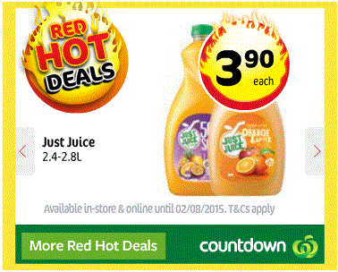

Well-designed multimedia products should have a clean dunclattered interface with intuitive navigation aids. According to Richard E. Mayer from University of California, Santa Barbara in a series of experimental comparisons it was found that people perform much better on a memory test when they get the information from words and graphics than from words alone. Not all multimedia is effective. Just like any other product, multimedia can suffer from poor design and can achieve a lot of higher goals from great design.
This is a critique to Countdown Weekly Specials Red Hot Deals advertisement which were originally created in Flash.
Due to Countdown Supermarket serves people of any category, this advertisement of groceries is not targeting any of the audience group in particular.
It is created in a simplified format of slides offering few different products and suitable for people of any education level.
The aspect of highlighting the low price for the products can be hinting that this advertisement is targeting people with lower income and big size families.
The other aspect is the chosen images fall to a category of healthy foods, such as vegetables, juices and meat.
Logically thinking this could be a subtle sign that the advertisement is targeting healthy eaters and people with special medical conditions as well.
Go Up
The main aim of this multimedia animated product provided by Countdown Supermarket is to deliver the weekly specials information to the buyer in a friendly entertaining way. Obviously this particular advertisment is short lived due to time constraint of the featured information. This advertisement has to be updated regularly to fit the business marketing plan. Go Up
Countdown animated advertisement is a combination of images and words in a motion. There is no sound or video provided, but it is relatively interactive due to easy navigation between different sliding screens, bright colourful attractive but simple images and catching motion and animation.
The navigation of the advertismenet is very easy. Despite the images and information move automatically, the user always can use side buttons to return the screen back or move forward to next screen to be able to catch all the information on the screen.
The side links appear just a couple of seconds later from the first screen loading, which does not make user to wait if he wishes to manipulate the navigation.
There are one more link provided which offers to user to go and see more of the Hot Deals options. This is link is situated on the bottom of the page. The location of this link helps to keep main area unclattered.
Navigation button "Back" |
Navigation button "Forward" |
Link to Countdown Website |
Presentation Technique of this advertisement is a slide format. Normally slide formats are very easy to comprehend and retrieve the information it is providing.
The low amount of text in this ad further keeps the whole information to be easily absorbed and understood. The provided text covers the short description of the product and pointing that the legal rights of the supermarket is protected.
Screen 1 |
Screen 2 |
Screen 3 |
Despite the images demonstrating completely different products, the colour pallete is limited to three colours only: slightly different hues of red, green and yellow.
This aproach makes the advertisement to be easy on peoples eyes and also due to this is a basic colours which can be found in nature, every person recognize them including colour blind people.
Background colour is a basic white which keeps the advertisement look clean and refreshing. The text colour is black which provides the proper contrast to the background.
The images were selected carefully, because the content doesn't give any reason to offend or to be misunderstood by any user.
The indicative information of the Hot Deals period and the info pointing to Supermarket legal rights are presented in short simple sentence and in soft light grey colour. This serves its purpose: to be there for reference without drawing attention to it.
Overall the amount of information is to the point as it provides enough information and does not clatter the stage.
The information is relevant and accurate.
The general impact of the advertisement is very positive, uplifting, welcoming and interactive.It grabbes attention of the user, provides right information and entertain at the same time.
The level of interactivity is limited to the navigation features, however the purpose of this particular advertisement does not require too much of interactivity. The given level of interactivity is totally useful as it is a navigation feature and provide some degree of entertainment at the same time.
The main entertaining component is the logo of Hot Deals which appears first and demonstrating very catchy effect.
In regards to improvement I would suggest to add some sound. However this suggestion depends on where the advertisement will be placed.
If this advertisement will be played on the big LED screen somewhere in the city, than sound does need to be there. If it will be moderate size LED screen on the entry to the supermarket, than the sound (the voice read the text of the ad) would help to people who has difficulties with vision. In the case if the advertisement will be placed on some cooking website or something in similar category, the sound feature (possibly musical sound) could have option to be switched on and off.
As per outlay and colour design there are can be many other versions, but this would be considered as creativity and fresh ideas, but not as improvement in such.